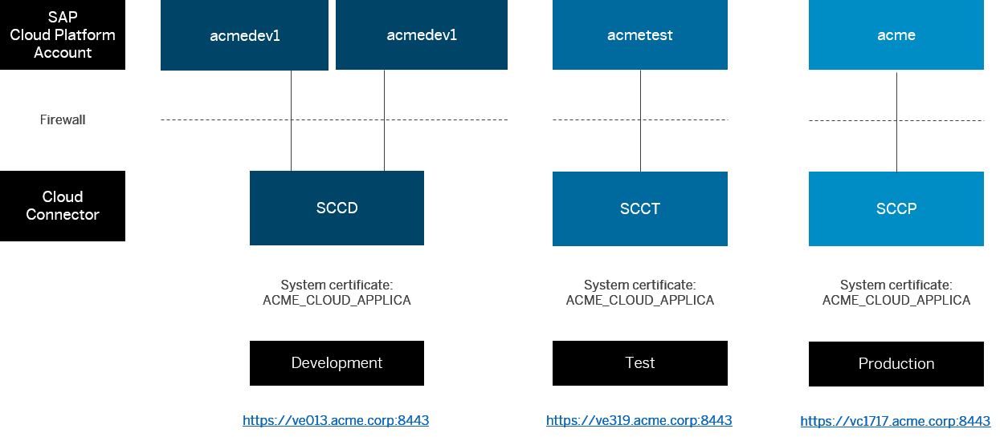

The following chapter provides process guidelines that help you to manage productive hybrid scenarios, in which applications running on SAP Cloud Platform require access to on-premise systems.
To have an overview of the cloud and on-premise landscape relevant for your hybrid scenario, we recommend that you document the used cloud accounts, their connected Cloud connectors and the used on-premise backend systems in landscape overview diagrams. Document the account names, the purpose of the accounts (dev, test, prod), information of the Cloud connector machines (host, domains), the URLs of the Cloud connectors in the landscape overview document, and possibly more details.
An example of landscape overview documentation could look like this:

It is recommended to document which users have administrator access to the cloud accounts, to the Cloud connector operating system, and to the Cloud connector Administration UI.
An example of such administrator role documentation could look like following sample table:
| Resource | john@acme.com | marry@acme.com | pete@acme.com | greg@acme.com |
|---|---|---|---|---|
| Cloud Account (CA) Dev1 | X | |||
| CA Dev2 | X | |||
| CA Test | X | X | ||
| CA Prod | X | |||
| Cloud connector Dev1 + Dev2 | X | X | ||
| Cloud connector Test | X | X | ||
| Cloud connector Prod | X | |||
| Cloud connector Dev1 + Dev2 file system | X | X | ||
| Cloud connector Test file system | X | |||
| Cloud connector Prod file system |
It is recommended to create and document separate email distribution lists for both the cloud account administrators and the Cloud connector administrators.
An example of the documented communication channels could look like this:
| Landscape | Distribution List |
|---|---|
| Cloud Account Administrators | DL ACME HCP Account Admins |
| Cloud Connector Administrators | DL ACME Cloud Connector Admins |
It is recommended to define and document mandatory project and development guidelines for your SAP Cloud Platform projects. An example of such a guideline could look like the following:
For every SAP Cloud Platform project of your organization, the following requirements are mandatory:
It is recommended to define and document the process of how to set a cloud application live and how to configure needed connectivity for such an application.
For example, the following processes could be seen as relevant and shall be defined and document in more detail: